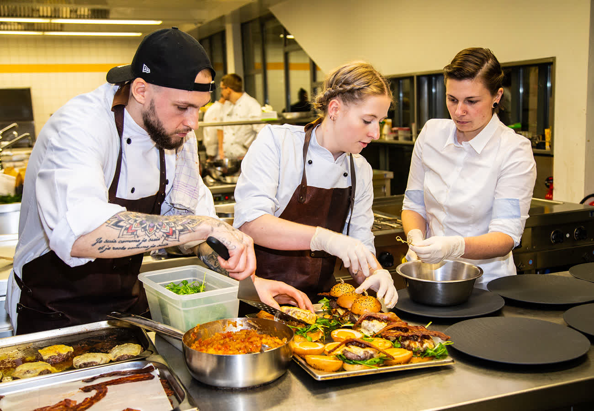
22. Juni 2026
Mittagstisch in der Hofküche
Jede Woche neu: der wechselnde Mittagstisch mit hofeigenen Zutaten.
Wochenkarte als PDFHofladen, Restaurant Hofküche, Gärtnerei und Landwirtschaft: der Wendelinushof in St. Wendel. Regional erzeugt, transparent produziert, seit über 100 Jahren.
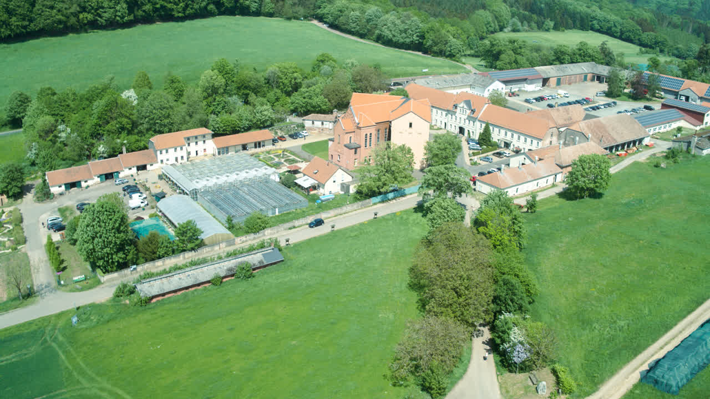
Auf dem ehemaligen Paterhof der Steyler Missionare betreibt die vevio gGmbH heute eine Werkstatt für behinderte Menschen. Das Ziel von 100 Arbeitsplätzen im grünen Bereich ist erreicht. Alle Produkte folgen dem Lokalwarenprinzip: vom Futter aus eigenem Anbau über die transparente Tierhaltung bis zur Theke im Hofladen.
Den Hof kennenlernen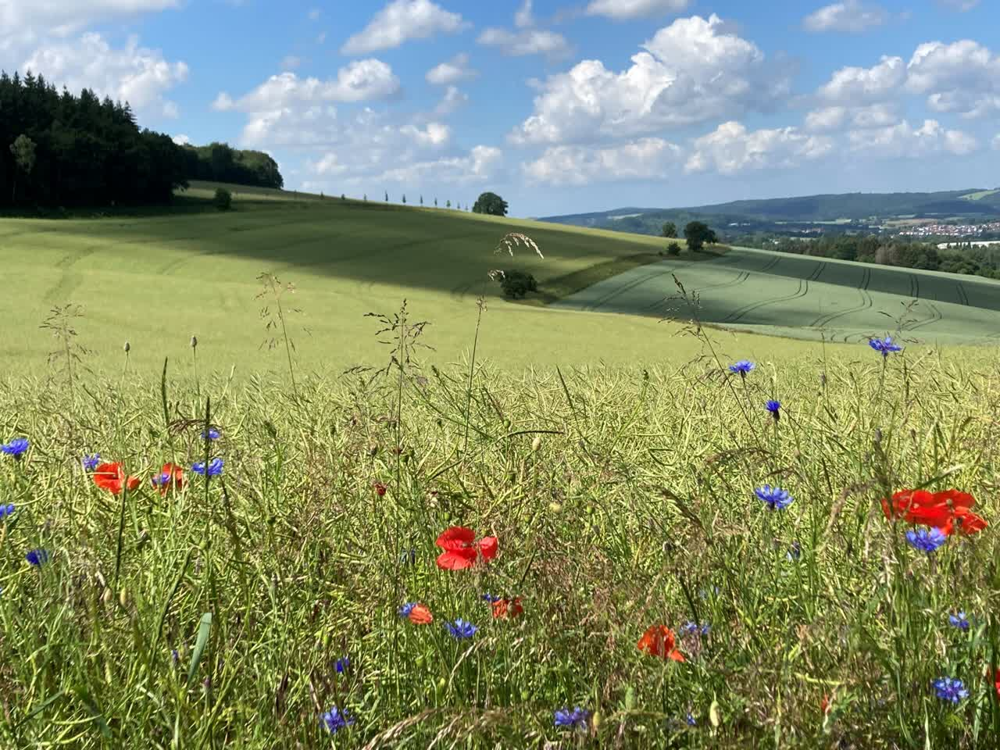
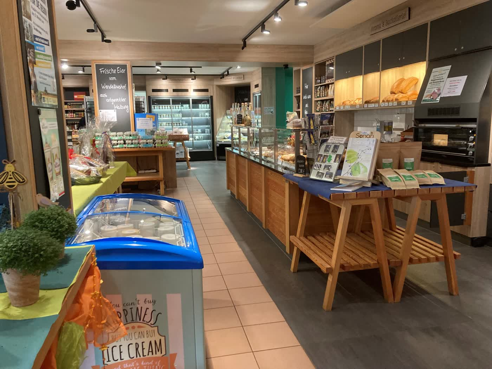
Fleisch, Wurst, Gemüse und Regionales, direkt vom Hof über die Theke.
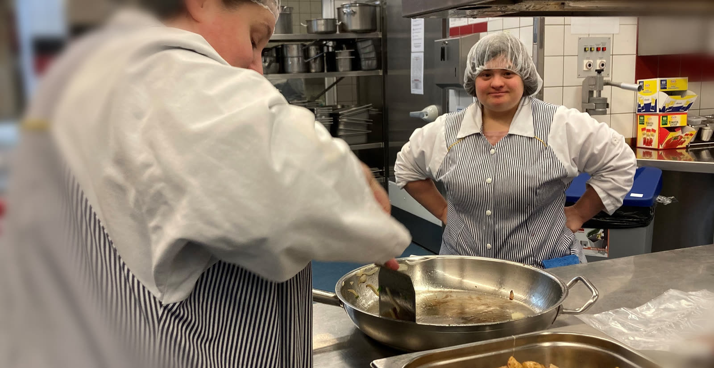
Gelebte Inklusion, wechselnder Mittagstisch, sonnige Terrasse.
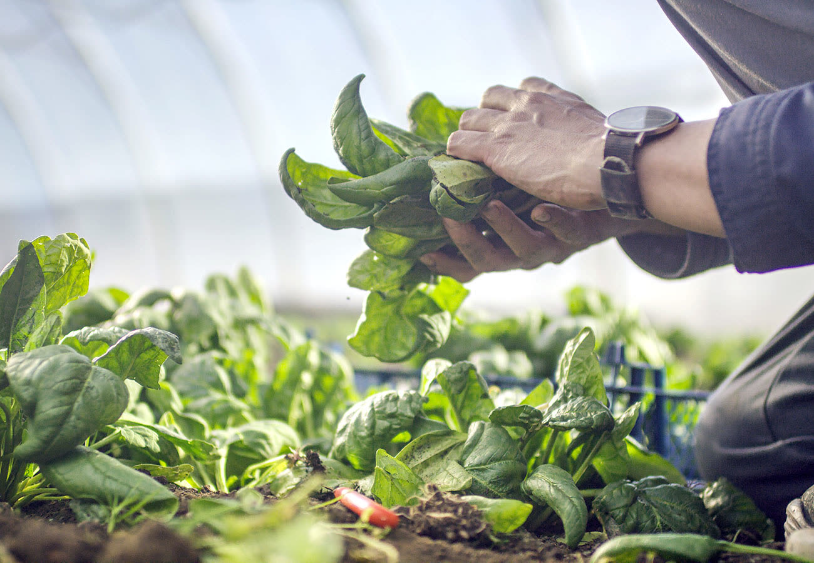
Pflanzen für Beet, Balkon und Garten.
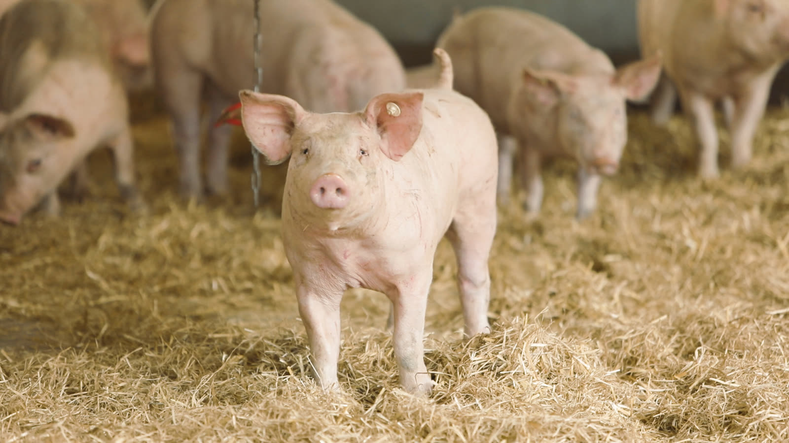
Ackerbau und Viehzucht seit über 100 Jahren.
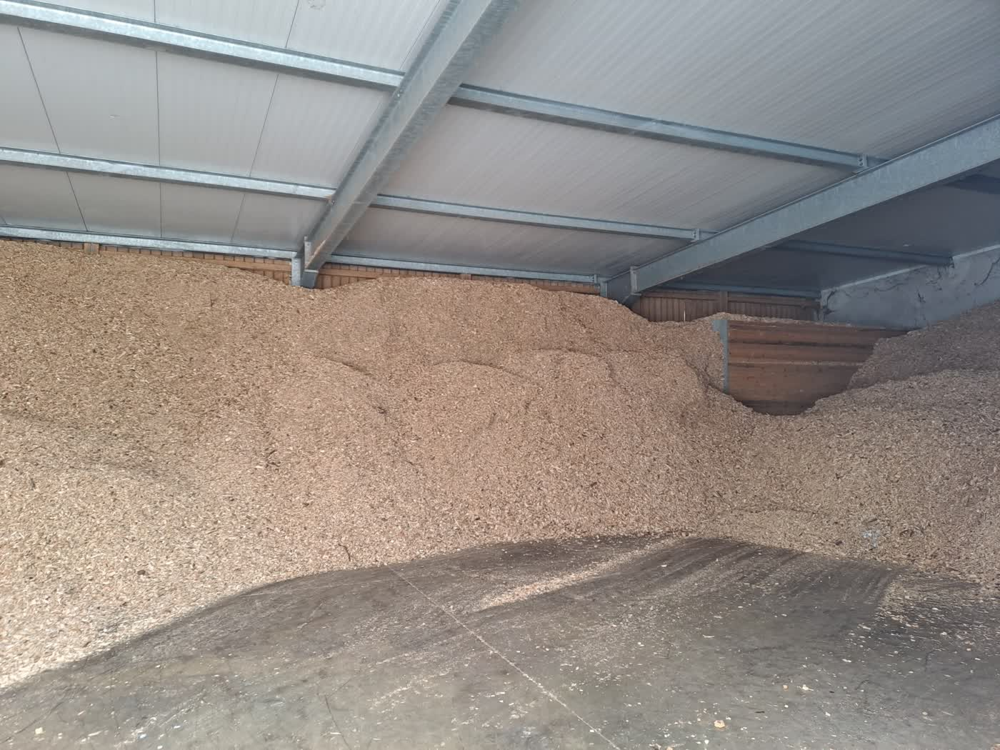
Nachhaltig heizen, Strom vom eigenen Dach.
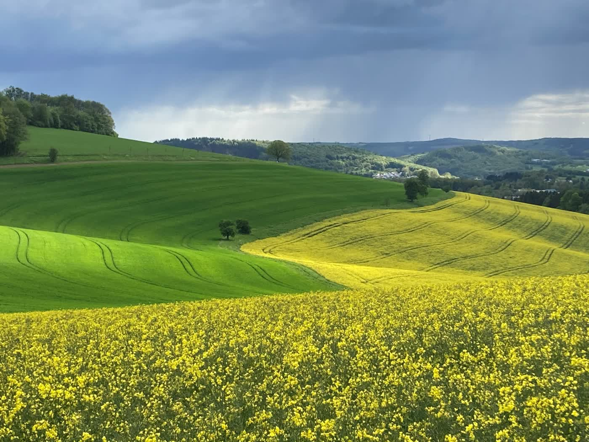
Zwergziegen, Hofführungen, Wander- und Radwege: entdecken, erleben, lernen.

22. Juni 2026
Jede Woche neu: der wechselnde Mittagstisch mit hofeigenen Zutaten.
Wochenkarte als PDF
1. Mai 2026
Mit Fassanstich und dem eigenen Wendelinushof Hellen, gebraut mit der Kirner Brauerei.
Mehr zum Biergarten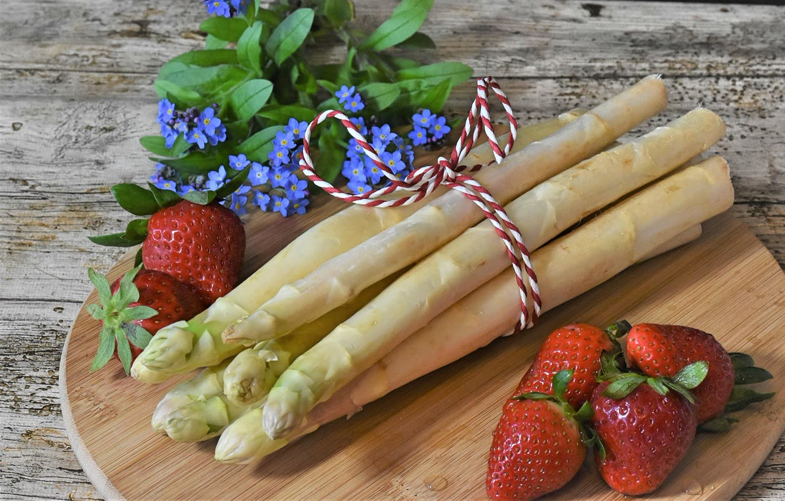
Saisonal
Zur Spargelzeit mit passenden Gerichten aus regionalen Zutaten.
Spargelkarte als PDFMontag ist Ruhetag. Die Gärtnerei öffnet saisonal unterschiedlich.
Alle Zeiten im DetailRufen Sie uns an oder stellen Sie Ihre Reservierungsanfrage online. Kurzfristige Wünsche klären wir am schnellsten am Telefon.
Der Inklusionsbetrieb mit eigener Schlachtung und kurzen Wegen.
Die Eigenproduktlinie, entwickelt und produziert von Menschen mit Handicap.
Der Träger des Wendelinushofs. Wir leben Vielfalt.
Unsere Arbeit wird unterstützt durch:
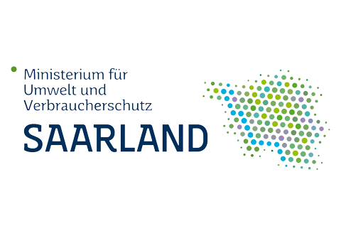
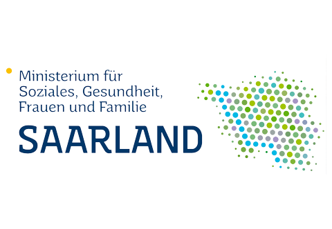
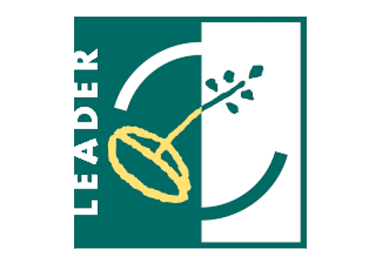
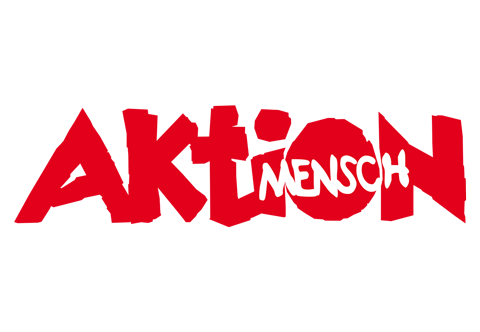